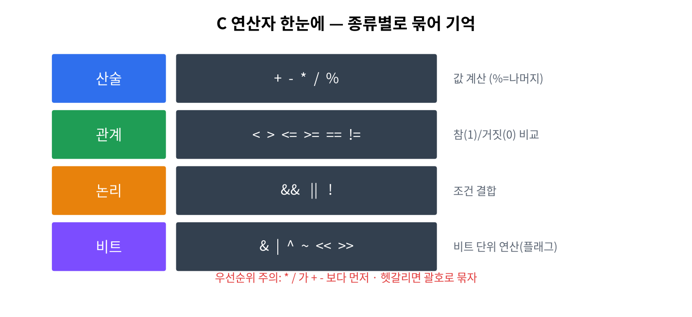

4주차 · 연산자¶
C언어 · 미래모빌리티학과 | CLO1 | 교재 Ch05

학습 목표¶
- 산술·관계·논리·대입·증감 연산자와 우선순위를 사용한다.
- 비트 연산자로 센서 상태 플래그를 묶고 다룬다.
1. 이론¶
1.1 연산자 분류¶
| 종류 | 연산자 | 예 |
|---|---|---|
| 산술 | + - * / % |
7 % 3 → 1(나머지) |
| 관계 | > < >= <= == != |
a > b → 0/1 |
| 논리 | && || ! |
(a>0)&&(b>0) |
| 대입 | = += -= *= /= |
x += 5 |
| 증감 | ++ -- |
i++ |
| 비트 | & | ^ ~ << >> |
아래 1.3 |
정수 나눗셈과 나머지
/는 정수끼리면 몫만 남는다(7/2=3). %(나머지)는 정수에만 쓴다.
1.2 우선순위(요약)¶
( ) → ! ++ -- → * / % → + - → < > → == != → && → || → =
헷갈리면 괄호로 명확히. 가독성도 좋아진다.
1.3 비트 연산 — 센서 플래그¶
센서 여러 개의 on/off를 정수 하나의 비트에 담는다(임베디드 핵심 기법).
#define S_FRONT (1 << 0) // 0b001
#define S_LEFT (1 << 1) // 0b010
#define S_RIGHT (1 << 2) // 0b100
unsigned char s = 0;
s |= S_FRONT; // 켜기 (OR)
s &= ~S_LEFT; // 끄기 (AND NOT)
s ^= S_RIGHT; // 토글 (XOR)
if (s & S_FRONT) { /* 전방 감지 */ } // 확인 (AND)
s |= FLAG |
| 끄기 | s &= ~FLAG |
| 토글 | s ^= FLAG |
| 확인 | s & FLAG |
2. 핵심 용어 정리¶
| 용어 | 설명 |
|---|---|
| 피연산자 | 연산의 대상 값 |
| 우선순위 | 연산이 적용되는 순서 |
| 단락 평가 | &&/||에서 결과가 정해지면 뒤를 건너뜀 |
| 비트 플래그 | 각 비트로 on/off 상태를 표현 |
시프트(<< >>) |
비트를 좌/우로 이동(×2, ÷2 효과) |
3. 실습¶
실습 4-1 · 속도 계산 (예제 ex02_operators.c)¶
double dist = 150.0, t = 12.0;
double speed = dist / t;
printf("%.2f m/s (%.1f km/h)\n", speed, speed * 3.6);
실습 4-2 · 센서 플래그¶
4방향 센서를 비트로 켜기/끄기/토글/확인 (위 1.3).
실습 4-3 · 홀짝 판별(비트)¶
n & 1로 홀짝 판별(% 없이). 연습 2-3.
4. 과제¶
- 속도 계산기, 비트 플래그 센서 관리(연습 2-1~2-3).
5. 참조¶
형성평가 체크포인트¶
- 우선순위 예측 · [ ]
&/|/^/~용도 구분 · [ ] 켜기/끄기/토글/확인 구현
연습문제¶
3 + 4 * 2의 값은?unsigned char s=0; s |= (1<<0); s |= (1<<2);일 때s의 값은?- 이어서
s &= ~(1<<0);을 하면s의 값은? n & 1의 결과가 1이면n은 홀수인가 짝수인가?
정답 및 해설
11—*가+보다 우선(4*2=8, +3).5— 0b001 | 0b100 = 0b101 = 5.4— 0번 비트를 끄면 0b100 = 4.- 홀수 — 마지막 비트가 1이면 홀수.